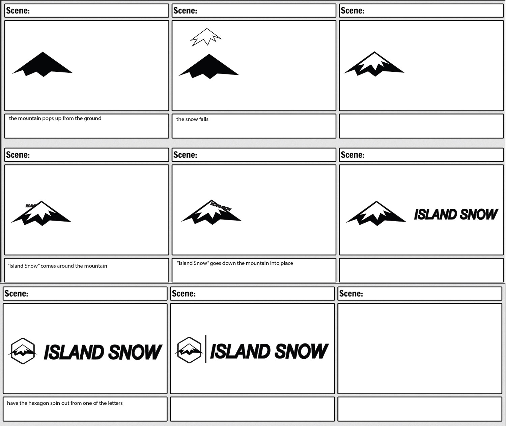

Motion Graphic
Island Snow
Client: Island Snow
Project Type: Logo Animation
Competencies: After Effects, Illustrator
Software: Animation, Visual Style, Audio
Exploring multiple ideas before defining the solution
braindstroming process
To prepare the logo for animation, I explored ways to improve its clarity and scalability. Since the original file was pixelated, I recreated it in Adobe Illustrator by manually redrawing the mark and using Auto Trace on the business name to convert it into vector paths. This gave me more flexibility to experiment with depth and allowed me to develop a clean 3D text effect while maintaining a sharp, polished look.
